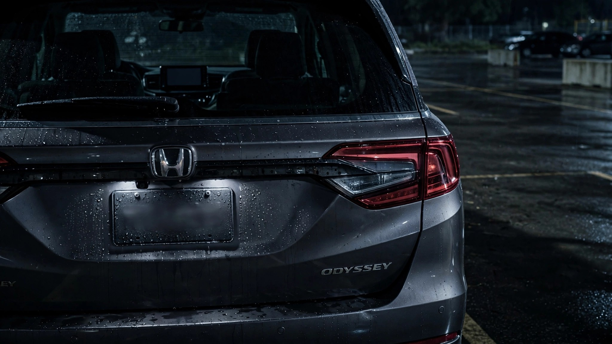

Honda Knew Its Odyssey Camera Fix Was Broken in 2021. It Just Got Around to Telling You.

Federal law has required rearview cameras on every new car sold in America since May 2018. The mandate exists because backing over children and pedestrians was killing roughly 210 people a year.[1] So when Honda discovered that the rearview cameras on 325,588 Odyssey minivans could fill with water and go black, you might expect a certain urgency in getting them fixed.
Honda first recalled 212,000 Odysseys in August 2020 for exactly this problem: water intrusion killing the backup camera image. Dealers replaced cameras, Honda closed the file, and everyone moved on. Except in June 2021, barely a year later, Honda received a report that a vehicle they'd already repaired still had a dead camera.[2] That should have been a five-alarm event. A federally mandated safety device, already recalled once, failing again after the manufacturer's own fix. Instead, Honda opened an internal investigation that ran for five years before producing the expanded recall that landed on August 4, 2026.
The agency filing is blunt about the root cause: "a flawed manufacturing process and a design deficiency" allowed water into the camera housing, which is not a one-off quality escape but a design problem baked into the part itself, which means replacing cameras with identically designed cameras was never going to be a permanent solution, and Honda's own post-repair failure data should have made that obvious years before the 2026 recall expanded the scope from 212,000 to 325,588 vehicles spanning model years 2018 through 2020.[2]
The Odyssey already carries a complicated safety profile in FARS data. With 864 deaths recorded between 2014 and 2023, only 15.4% of those fatal crashes involved an impaired driver, one of the lowest impairment rates in the entire database.[3] That means families die in these things sober, attentive, and presumably relying on the safety equipment Honda told them was working. A broken backup camera doesn't cause highway fatalities, but it does undermine the already thin margin of safety during the low-speed maneuvers where minivans spend most of their operational lives: driveways, school parking lots, grocery store aisles. The exact environments where the FMVSS 111 mandate was designed to save lives.
And the timing gets worse when you pull back. The same 2018 through 2020 Odysseys are currently sitting under two separate NHTSA investigations for engine stalling and fire risk. If those probes result in recalls, the agency estimates roughly 3.6 million Honda vehicles could be affected.[2] For owners of the recalled camera models, that means a minivan you bought to haul your kids safely might have a camera that lies to you, an engine that quits without warning, and a fire risk nobody's quantified yet. Stack those up and ask yourself how many concurrent defect investigations a single model family can sustain before "abundance of caution" starts to sound like "institutional denial."
What should you actually do? If you own a 2018, 2019, or 2020 Honda Odyssey, check your VIN at nhtsa.gov/recalls right now. Do not wait for the notification letter Honda plans to send by August 24. If your camera display shows any distortion, flickering, or goes blank when you shift into reverse, do not rely on it. Use your mirrors and physically turn around until the dealer replaces the camera. And if you had the camera replaced under the 2020 recall and it's still working, still get it checked: the entire design is compromised, and water damage is progressive. It may not fail today, but the engineering that was supposed to prevent failure already failed once.
Sources & References
- NHTSA, Federal Motor Vehicle Safety Standard No. 111: Rear Visibility. nhtsa.gov
- MotorSafety.org, Honda Recalls: 325,588 2018–2020 Odyssey, rearview camera water intrusion, August 4, 2026. motorsafety.org
- NHTSA, Fatality Analysis Reporting System (FARS), 2014–2023. nhtsa.gov